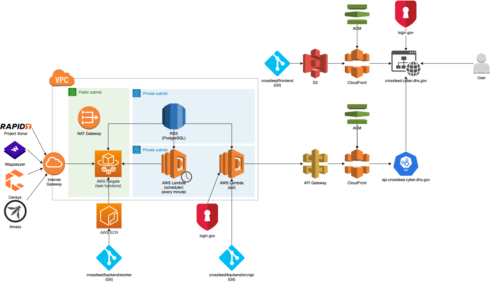

Architecture
Overall architecture

Worker architecture
The Scan model represents a scheduled scan that is run on all organizations.
A scan can be of multiple types – for example, amass , or findomain .
First, add an organization:

Then, add a scan:

Scheduling
The lambda function scheduler.ts goes through each organization and sees which scans
need to be run based on their schedule and when they were last run on a particular organization.
Running
When a scan is run, a ScanTask model is created, which launches a Fargate task.
All information needed for the scan (defined in the CommandOptions interface) is specified
through the CROSSFEED_COMMAND_OPTIONS environment variable. Other secrets needed for the Fargate
task to run are specified in the task configuration through Terraform.
The entry point for the Fargate task is at backend/src/worker.ts .

Local runs
When running Crossfeed locally, each worker is launched through a Docker container instead.
To inspect tasks that are running (and have recently finished), do docker ps -a > out and inspect the contents of out :

Note that each Docker container is identified by organization name and scan name.
To view the logs of a particular Docker container, you can run docker logs crossfeed_worker_cisa_censys_8358453 .
ScanTask
The ScanTask model represents a single scan task on a single organization and stores the status
and errors, if any, of that particular task.
You can view the most recent Scan Tasks on the organization page:

ScanTask status reference
created: model is createdrequested: a request to Fargate has been sent to start the taskstarted: the Fargate container has started running the taskfinished: the Fargate container has finished running the taskfailed: any of the steps above have failed
Building Docker images
For more information on how to build and publish the Fargate Docker images, see backend/README.md .